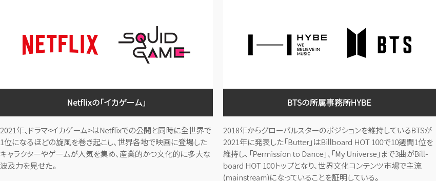
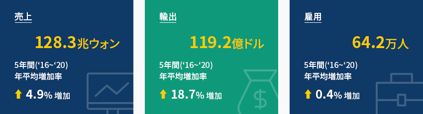
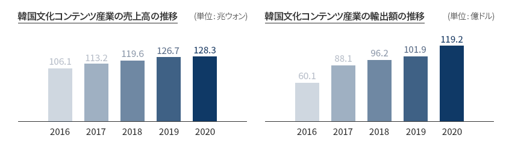
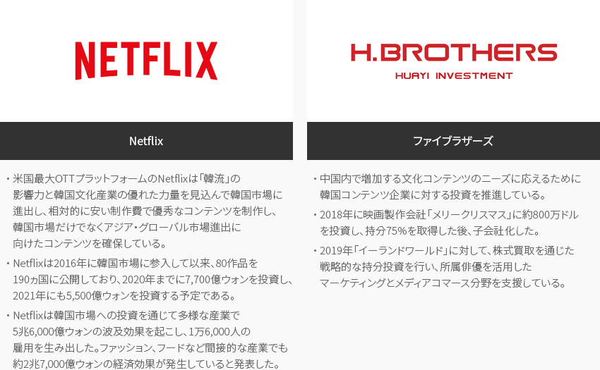
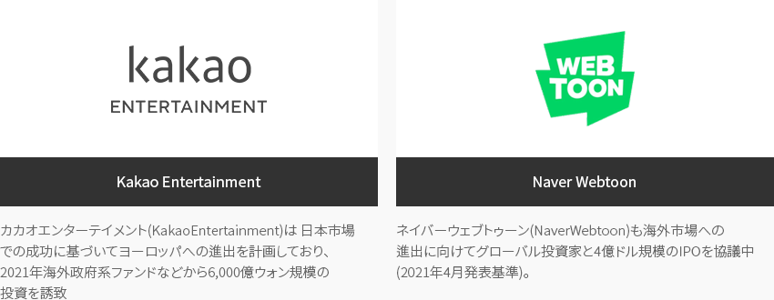
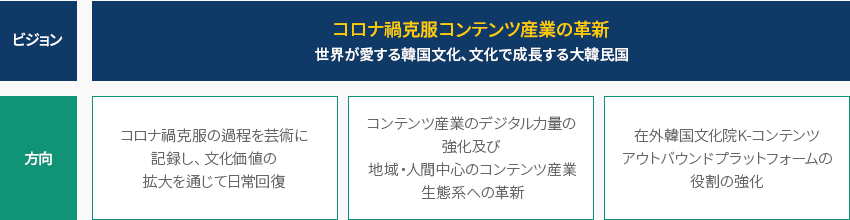
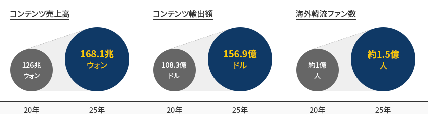
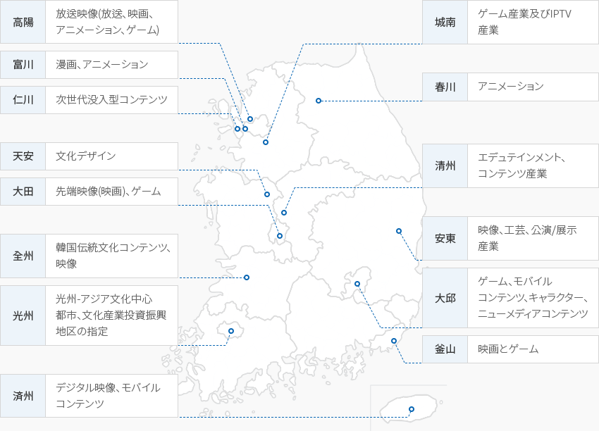

文化コンテンツ
- Home
- Why KOREA
- 産業
- 文化コンテンツ
文化コンテンツ
Cultural Content
-
「韓流」で代表される 大韓民国文化コンテンツの底力 コンテンツを閉じる「韓流」で代表される 大韓民国文化コンテンツの底力韓国の文化コンテンツ産業は技術と人間の相互作用に基づいて「夢と感性を売る社会(Dream Society、Jensen、2005)」を
産業的に実現することを目標にしており、第4次産業革命とメタバース時代を迎えて世界の人々に好まれている韓国文化コンテンツの
影響力は日増しに大きくなっている。韓国文化コンテンツ市場の規模は約709億ドル(2023年予測値)で世界7位の水準であり、この20年間
グローバル市場で「韓流」の名声を維持している。「世界市場で認められた韓国の文化コンテンツ」Netflixの「イカゲーム」 - 2021年、ドラマ<イカゲーム> はNetflixでの公開と同時に全世界で1位になるほどの旋風を巻き起こし、世界各地で映画に登場したキャラクターやゲームが人気を集め、産業的かつ文化的に多大な波及力を見せた。BTSの所属事務所HYBE - 2018年からグローバルスターのポジションを維持しているBTSが2021年に発表した「Butter」はBillboard HOT 100で10週間1位を維持し、「Permission to Dance」、「My Universe」まで3曲がBillboard HOT 100トップとなり、世界文化コンテンツ市場で主流(mainstream)になっていることを証明している。 「世界文化コンテンツ市場の規模」(単位: 億ドル)
「世界文化コンテンツ市場の規模」(単位: 億ドル)世界文化コンテンツ市場の規模 順位, 国, 年度(2020~2025), 年平均増加率(%) 順位 国 2020p 2021 2022 2023 2024 2025 年平均増加率(%) 1 米国 8,446 8,925 9,519 9,885 10,230 10,543 4.54 2 中国 3,449 3,699 3,939 4,153 4,339 4,505 5.49 3 日本 1,943 2,034 2,109 2,156 2,201 2,243 2.91 4 ドイツ 999 1,058 1,128 1,169 1,206 1,237 4.36 5 英国 971 1,058 1,136 1,197 1,250 1,305 6.10 6 フランス 680 728 782 816 849 878 5.25 - 7
- 韓国
- 598
- 641
- 679
- 709
- 735
- 759
- 4.87
8 カナダ 544 574 610 636 660 681 4.62 9 イタリア 382 417 454 472 488 500 5.54 10 インド 352 401 448 494 540 586 10.75 ※ 出所 : KOCCA(2022)。 2021海外コンテンツ市場分析 -
韓国 文化コンテンツ産業の動向 コンテンツを開く韓国 文化コンテンツ産業の動向韓国の文化コンテンツ産業の売上高は128.3兆ウォン、輸出119.2億ドル、雇用64.2万人で、 最近5年間の年平均増加率は
売上4.9％、輸出18.7％、雇用0.4％と着実な増加傾向を見せている(2020年決算基準)。産業別の詳細をみると、売上高は
放送産業(22.0兆ウォン)、出版産業(21.6兆ウォン)の順に高く、輸出額はゲーム産業が81.9億ドル水準で
文化コンテンツ産業輸出額全体の68.7％を占める。
※ 資料: 文化体育観光部(2022)。 2021コンテンツ産業統計(2020年基準)「韓国文化コンテンツ産業の現況」韓国文化コンテンツ産業の現況 区分, 企業数(社), 従事者数(人), 売上高(百万ウォン), 付加価値額(百万ウォン), 付加価値率(%), 輸出額(千ドル), 輸入額(千ドル), 貿易収支(千ドル) 区分 企業数
(社)従事者数
(人)売上高
(百万ウォン)付加価値額
(百万ウォン)付加価値率
(%)輸出額
(千ドル)輸入額
(千ドル)貿易収支
(千ドル)出版 25,244 185,444 21,648,849 8,758,970 40.5 345,960 254,371 91,589 漫画 6,144 11,230 1,534,444 562,733 36.7 62,715 6,493 56,222 音楽 33,138 65,464 6,064,748 1,982,931 32.7 679,633 12,146 667,487 映画 916 10,497 2,987,075 1,015,512 34.0 54,157 28,330 25,827 ゲーム 11,541 83,303 18,885,484 8,320,944 44.1 8,193,562 270,794 7,922,768 アニメーション 490 5,472 553,290 232,909 42.1 134,532 7,791 126,741 放送 1,070 50,239 21,964,722 7,699,900 35.1 692,790 60,969 631,822 広告 6,337 68,888 17,421,750 5,874,614 33.7 119,935 98,672 21,263 キャラクター 2,700 36,505 12,218,076 4,863,779 39.8 715,816 158,420 557,396 知識情報 9,949 93,182 19,373,367 8,686,346 44.8 691,987 9,467 682,520 コンテンツ
ソリューション2,022 31,863 5,635,230 2,546,517 45.2 233,196 13,369 219,827 全体 99,551 642,086 128,287,034 50,545,154 39.4 11,924,284 920,822 11,003,462 ※ 資料 : 文化体育観光部(2022)。 2021コンテンツ産業統計(2020年基準)韓国文化コンテンツ産業の売上高の推移/ (単位 : 兆ウォン)- 2016 - 106.1
- 2017 - 113.2
- 2018 - 119.6
- 2019 - 126.7
- 2020 - 128.3
韓国文化コンテンツ産業の輸出額の推移/ (単位 : 億ドル)- 2016 - 60.1
- 2017 - 88.1
- 2018 - 96.2
- 2019 - 101.9
- 2020 - 119.2
※ 資料: 文化体育観光部(2022)。2021コンテンツ産業統計(2020年基準) -
韓国に進出したグローバル企業の 活発なコンテンツ制作 コンテンツを開く韓国に進出したグローバル企業の 活発なコンテンツ制作外国人直接投資は出版、映画、放送、ゲーム、エンターテインメント事業など相対的に
企業の規模が大きい領域で行われており、 Netflix、ファイブラザーズが韓国に進出した代表的な企業である。-
Netflix
- 米国最大OTTプラットフォームのNetflixは「韓流」の 影響力と韓国文化産業の優れた力量を見込んで韓国市場に進出し、相対的に安い制作費で優秀なコンテンツを制作し、韓国市場だけでなくアジア・グローバル市場進出に向けたコンテンツを確保している。
- Netflixは2016年に韓国市場に参入して以来、80作品を190ヵ国に公開しており、2020年までに7,700億ウォンを投資し、2021年にも5,500億ウォンを投資する予定である。
- Netflixは韓国市場への投資を通じて多様な産業で 5兆6,000億ウォンの波及効果を起こし、1万6,000人の雇用を生み出した。ファッション、フードなど間接的な産業でも約2兆7,000億ウォンの経済効果が発生していると発表した。
-
ファイブラザーズ
- 中国内で増加する文化コンテンツのニーズに応えるために韓国コンテンツ企業に対する投資を推進している。
- 2018年に映画製作会社「メリークリスマス」に約800万ドルを投資し、持分75%を取得した後、子会社化した。
- 2019年「イーランドワールド」に対して、株式買取を通じた戦略的な持分投資を行い、所属俳優を活用したマーケティングとメディアコマース分野を支援している。
-
Netflix
-
ウェブトゥーン(Webtoon)企業 海外進出及び投資誘致 コンテンツを開くウェブトゥーン(Webtoon)企業 海外進出及び投資誘致
- Kakao Entertainment - カカオエンターテイメント(KakaoEntertainment)は 日本市場での成功に基づいてヨーロッパへの進出を計画しており、2021年海外政府系ファンドなどから6,000億ウォン規模の投資を誘致
- Naver Webtoon - ネイバーウェブトゥーン(NaverWebtoon)も海外市場への進出に向けてグローバル投資家と4億ドル規模のIPOを協議中(2021年4月発表基準)。
-
文化コンテンツ産業のデジタル力量の強化と生態系革新に向けた コロナ禍克服のためのコンテンツ産業の革新戦略 コンテンツを開く文化コンテンツ産業のデジタル力量の強化と
生態系革新に向けた コロナ禍克服のためのコンテンツ産業の革新戦略2021年11月、国務総理主宰で第7回コンテンツ産業振興委員会が開催され、コロナ禍の克服を契機に
した文化コンテンツ産業のデジタル力量の強化と生態系の革新に向けた <コロナ禍克服コンテンツ産業革新戦略> が打ち出された。ビジョン - コロナ禍克服コンテンツ産業の革新 世界が愛する韓国文化、文化で成長する大韓民国方向- コロナ禍克服の過程を芸術に記録し、文化価値の拡大を通じて日常回復
- コンテンツ産業のデジタル力量の強化及び 地域・人間中心のコンテンツ産業 生態系への革新
- 在外韓国文化院K-コンテンツ アウトバウンドプラットフォームの役割の強化
「コロナ禍克服コンテンツ産業革新戦略の目標」- コンテンツ売上高: 126兆ウォン('20) > 168.1兆ウォン('25)
- コンテンツ輸出額: 108.3億ドル('20) > 156.9億ドル('25)
- 海外韓流ファン数: 約 1億人('20) > 約 1.5億人('25)
-
文化産業 クラスター コンテンツを開く文化産業 クラスタークリエイティビティと想像力を源泉とする産業の特性から立地条件の重要性は相対的に低いが、人的資源が中心となる
産業の特性上、文化コンテンツ企業の90%以上がソウルを含む首都圏に分布している。- 2021年10月、高陽市はK-POP専用公演場の「CJ LIVE CITY」造成計画を発表し、2024年オープンを目標としている。
- 2021年11月、国宝クラスの文化財から近・現代美術品までを網羅する「イ・ゴンヒコレクション」の所蔵館をソウル鐘路区松峴洞敷地に建設すると発表された。 周辺の国立現代美術館とソウル工芸博物館などとのシナジー効果が予想される。2027年のオープンを目標としている。
政府の地域文化産業強化政策により、文化コンテンツ企業の誘致及び関連産業の集積化を通じたシナジー効果を生み出す ために
문화文化産業団地、文化産業振興地区、文化産業振興施設などが政府主導で構成された。また、文化産業振興基本法に基づき、
当該地域への入居企業には各種の負担金の免除や許認可支援、税制支援を行い、ジャンル別に有利な立地が形成されている。「2022年文化コンテンツ産業の政策目標」- 春川: アニメーション
- 富川: 漫画、アニメーション
- 高陽: 放送映像 (放送、映画、アニメーション、ゲーム)
- 仁川: 次世代没入型コンテンツ
- 城南: ゲーム産業及びIPTV産業
- 天安: 文化デザイン
- 清州: エデュテインメントコンテンツ産業
- 大田: 先端映像(映画)、ゲーム
- 安東: 映像、工芸、公演/展示産業
- 全州: 韓国伝統文化コンテンツ、映像
- 大邱: ゲーム、モバイルコンテンツ、キャラクター、ニューメディアコンテンツ
- 光州: アジア文化中心都市文化産業投資振興地区の指定
- 釜山: 映画とゲーム
- 済州: デジタル映像、モバイルコンテンツ
※ 資料協力：韓国文化観光研究院2022年文化コンテンツ産業の政策目標 区分, コンセプト, 入居支援, 指定現況 区分 コンセプト 入居支援 指定現況 文化産業団地 企業、大学、研究所、個人などが共同で文化産業と関連した研究開発、技術訓練、情報交流、共同制作などを行うことができる土地・建物・施設の集合体で、産業立地及び開発に関する法律に基づいて指定・開発された産業団地 - 各種の負担金の免除(代替森林資源造成費、農地保全負担金など5種)
- 各種の許認可支援(公共下水道工事の施行、河川・道路工事の施行及び占用など34種)
- 税制支援(取得税、登録税の免除、財産税50%免除など)
- 清州(2002.3)
- 春川(2008.1)
文化産業振興地区 文化産業関連企業及び大学、研究所などの密集度が他の地域より高い地域で、集積化を通じた文化産業関連企業及び大学、研究所などの営業活動・研究開発・人材養成・共同制作などを奨励し、それを促進するために指定された地域 - 各種の負担金の免除(代替森林資源造成費など4種)
- 各種の許認可支援(公共下水道工事の施行、河川・道路工事の施行及び占用など9種)
- 釜山、大邱、大田、富山、全州、天安、済州(2008.2)
- 仁川、高陽 (2008.12)
文化産業振興施設 文化産業関連事業者とその支援施設などを集団で誘致することで文化産業関連事業者の活動を支援するための施設 - 各種の負担金の免除(開発負担金、過密負担金など7種)
- 税制支援(取得税、登録税の免除、財産税50%免除など)
- ソウル上岩洞文化コンテンツセンター(2007.3)


Invest KOREA
文化コンテンツPM
イ・ユンソ
サービス産業誘致チーム
T.+82-2-3460-3282
おすすめの立地情報
産業団地情報
[Incheon Metropolitan City Yeonsu-gu] Songdo Knowledge and Information
Industrial Complex(Incheon Free Economic Zone)
Click [Go to Detailed Information] to go to the relevant information screen of
Smart K-Factory service of Industrial Complex Corporation.
-
Complex nameSongdo Knowledge and Information Industrial Complex(Incheon Free Economic Zone)
-
Initial designation date2000.09.18
-
Designated area(m2)2,401,745
-
ManagementIncheon Free Economic Zone Authority
-
Nearby RailwayBupyeong Station
-
Distance from station(km)18
-
Nearby AirportIncheon Airport
-
Distance from airport(km)31
-
Industrial water Supply capacity(ton/day)-
-
Affiliation local governmentIncheon Metropolitan City Yeonsu-gu
-
Population2,943,491
産業団地情報
[Gangwon-do Chuncheon City] Chuncheon Urban High-tech Cultural Industrial
Complex
Click [Go to Detailed Information] to go to the relevant information screen of
Smart K-Factory service of Industrial Complex Corporation.
-
Complex nameChuncheon Urban High-tech Cultural Industrial Complex
-
Initial designation date2008.01.25
-
Designated area(m2)186,922
-
ManagementGangwon-do Chuncheon City
-
Nearby RailwayJipyeong Station
-
Distance from station(km)60
-
Nearby AirportWonju Airport
-
Distance from airport(km)78
-
Industrial water Supply capacity(ton/day)-
-
Affiliation local governmentGangwon-do Chuncheon City
-
Population281,854
産業団地情報
[Gangwon-do Chuncheon City] Chuncheon Power IT Cultural Complex General
Industrial Complex
Click [Go to Detailed Information] to go to the relevant information screen of
Smart K-Factory service of Industrial Complex Corporation.
-
Complex nameChuncheon Power IT Cultural Complex General Industrial Complex
-
Initial designation date2009.06.05
-
Designated area(m2)353,659
-
ManagementGangwon-do Chuncheon City
-
Nearby RailwayYangpyeong Station
-
Distance from station(km)49
-
Nearby AirportWonju Airport
-
Distance from airport(km)65
-
Industrial water Supply capacity(ton/day)1,706(㎥/day)
-
Affiliation local governmentGangwon-do Chuncheon City
-
Population281,854
産業団地情報
[Chungcheongbuk-do Cheongju City] Cheongju Urban High-tech Cultural
Industrial Complex
Click [Go to Detailed Information] to go to the relevant information screen of
Smart K-Factory service of Industrial Complex Corporation.
-
Complex nameCheongju Urban High-tech Cultural Industrial Complex
-
Initial designation date2002.03.25
-
Designated area(m2)47,900
-
ManagementChungcheongbuk-do Cheongju City
-
Nearby RailwayOgeunjang Station
-
Distance from station(km)6
-
Nearby AirportCheongju International Airport
-
Distance from airport(km)9
-
Industrial water Supply capacity(ton/day)-
-
Affiliation local governmentChungcheongbuk-do Cheongju City
-
Population843,782
産業団地情報
[Gyeonggi-do Paju City] Paju Publishing Culture Information National
Industrial Complex
Click [Go to Detailed Information] to go to the relevant information screen of
Smart K-Factory service of Industrial Complex Corporation.
-
Complex namePaju Publishing Culture Information National Industrial Complex
-
Initial designation date1997.03.26
-
Designated area(m2)1,561,939
-
ManagementKorea Industrial Complex Corporation
-
Nearby RailwayPaju Station
-
Distance from station(km)17
-
Nearby AirportGimpo International Airport
-
Distance from airport(km)29
-
Industrial water Supply capacity(ton/day)2176(㎥/day)
-
Affiliation local governmentGyeonggi-do Paju City
-
Population459,158
産業団地情報
[Gwangju Metropolitan City Nam-gu] Songam General Industrial Complex
Click [Go to Detailed Information] to go to the relevant information screen of
Smart K-Factory service of Industrial Complex Corporation.
-
Complex nameSongam General Industrial Complex
-
Initial designation date1979.07.04
-
Designated area(m2)415,946
-
ManagementGwangju City (Songam Industrial Complex Council)
-
Nearby RailwayGwangju Station
-
Distance from station(km)14
-
Nearby AirportGwangju Airport
-
Distance from airport(km)9
-
Industrial water Supply capacity(ton/day)6000000(㎥/day)
-
Affiliation local governmentGwangju Metropolitan City Nam-gu
-
Population1,454,154